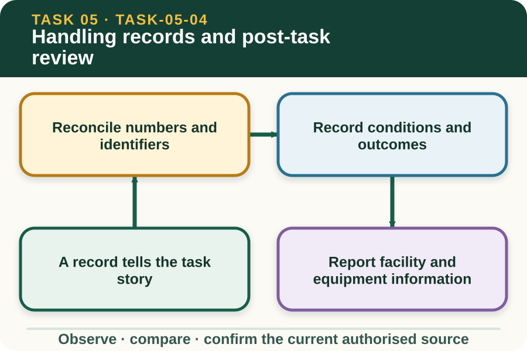

Classroom presentation · 8 slides
Handling records and post-task review
Task 5 · 1 of 8
Handling records and post-task review
Build a clear record of animals, conditions, actions, outcomes and follow-up.

Speaker notes
Teaching move (web-deck purpose): Use the module visual and the fictional worked example to move students from observation to a source-led decision. Ask students to name the evidence, the authority gap and the next safe communication step. Misconception and help: Do not hide or erase a discrepancy; record it and keep the correction authorised. Preserve evidence first, then reconcile through the current process. Applied action: Reconcile a handling record. Use a fictional teacher-provided plan, tally and outcome note. Mark matching data, preserve differences and prepare a three-point post-task brief for the authorised reviewer. Do not invent missing identifiers or repair directions. Boundary: This supplementary learning draws on mapped AHCLSK224, AHCLSK223 concepts. Current signed TAS and RTO documents control cohort delivery, assessment and competency decisions; current workplace procedures, supervision and authorised sources control real work. [Sources] - Source basis: AHCLSK224 Release 1 tally, completion, maintenance-reporting and outcome-reporting requirements, with AHCLSK223 Release 1 observation and communication principles. Current enterprise records, correction procedures, livestock plan and RTO package remain authoritative. - Visual visual-task-05-04: Generated locally from accepted Stage 05 module headings; no external image copied. - Course visual manifest: work/pi/visuals/visual-manifest.json
Task 5 · 2 of 8
Map the learning
- A record tells the task story
- Reconcile numbers and identifiers
- Record conditions and outcomes
Retrieve: A destination tally differs from the authorised starting count. What should the learner record?
Speaker notes
Teaching move (learning map): Use the module visual and the fictional worked example to move students from observation to a source-led decision. Ask students to name the evidence, the authority gap and the next safe communication step. Misconception and help: Do not hide or erase a discrepancy; record it and keep the correction authorised. Preserve evidence first, then reconcile through the current process. Applied action: Reconcile a handling record. Use a fictional teacher-provided plan, tally and outcome note. Mark matching data, preserve differences and prepare a three-point post-task brief for the authorised reviewer. Do not invent missing identifiers or repair directions. Boundary: This supplementary learning draws on mapped AHCLSK224, AHCLSK223 concepts. Current signed TAS and RTO documents control cohort delivery, assessment and competency decisions; current workplace procedures, supervision and authorised sources control real work. [Sources] - Source basis: AHCLSK224 Release 1 tally, completion, maintenance-reporting and outcome-reporting requirements, with AHCLSK223 Release 1 observation and communication principles. Current enterprise records, correction procedures, livestock plan and RTO package remain authoritative. - Visual visual-task-05-04: Generated locally from accepted Stage 05 module headings; no external image copied. - Course visual manifest: work/pi/visuals/visual-manifest.json
Task 5 · 3 of 8
Notice the evidence
A record tells the task story
A handling record connects the authorised purpose, animals, people, time, place, conditions and confirmed outcome. Its value comes from traceability, not from the number of boxes that have been filled.
Use the current enterprise identifiers and record system during real work. Classroom practice uses invented codes and events so no animal, property, worker or assessment information is exposed.
Reconcile numbers and identifiers
Counts or tallies should be compared with the authorised starting information and confirmed destination record. A difference is recorded and reported; it is not silently adjusted to make the totals appear consistent.
Identifier accuracy matters because later health, movement and enterprise records may depend on it. The learner should preserve the original evidence and follow the approved correction path rather than overwriting uncertainty.
Speaker notes
Teaching move (theory idea 1): Use the module visual and the fictional worked example to move students from observation to a source-led decision. Ask students to name the evidence, the authority gap and the next safe communication step. Misconception and help: Do not hide or erase a discrepancy; record it and keep the correction authorised. Preserve evidence first, then reconcile through the current process. Applied action: Reconcile a handling record. Use a fictional teacher-provided plan, tally and outcome note. Mark matching data, preserve differences and prepare a three-point post-task brief for the authorised reviewer. Do not invent missing identifiers or repair directions. Boundary: This supplementary learning draws on mapped AHCLSK224, AHCLSK223 concepts. Current signed TAS and RTO documents control cohort delivery, assessment and competency decisions; current workplace procedures, supervision and authorised sources control real work. [Sources] - Source basis: AHCLSK224 Release 1 tally, completion, maintenance-reporting and outcome-reporting requirements, with AHCLSK223 Release 1 observation and communication principles. Current enterprise records, correction procedures, livestock plan and RTO package remain authoritative. - Visual visual-task-05-04: Generated locally from accepted Stage 05 module headings; no external image copied. - Course visual manifest: work/pi/visuals/visual-manifest.json
Task 5 · 4 of 8
Use the source boundary
Record conditions and outcomes
Useful outcome fields include whether the authorised purpose was completed, which conditions changed and what directions were received. They can also capture observable welfare cues without making clinical conclusions.
A statement such as completed without issue is too broad when the record needs to support review. Name the checks made, discrepancies found, facilities reported and follow-up allocated within the learner's actual role.
Report facility and equipment information
AHCLSK224 links completion with reporting maintenance needs, faults, wear or damage. A factual note identifies the item, location, visible condition, time observed and person notified, without attempting an unauthorised repair.
The record should also state whether the condition affected the plan or remained for follow-up. It must not describe species-specific handling actions as a solution to an equipment or facility problem.
Speaker notes
Teaching move (theory idea 2): Use the module visual and the fictional worked example to move students from observation to a source-led decision. Ask students to name the evidence, the authority gap and the next safe communication step. Misconception and help: Do not hide or erase a discrepancy; record it and keep the correction authorised. Preserve evidence first, then reconcile through the current process. Applied action: Reconcile a handling record. Use a fictional teacher-provided plan, tally and outcome note. Mark matching data, preserve differences and prepare a three-point post-task brief for the authorised reviewer. Do not invent missing identifiers or repair directions. Boundary: This supplementary learning draws on mapped AHCLSK224, AHCLSK223 concepts. Current signed TAS and RTO documents control cohort delivery, assessment and competency decisions; current workplace procedures, supervision and authorised sources control real work. [Sources] - Source basis: AHCLSK224 Release 1 tally, completion, maintenance-reporting and outcome-reporting requirements, with AHCLSK223 Release 1 observation and communication principles. Current enterprise records, correction procedures, livestock plan and RTO package remain authoritative. - Visual visual-task-05-04: Generated locally from accepted Stage 05 module headings; no external image copied. - Course visual manifest: work/pi/visuals/visual-manifest.json
Task 5 · 5 of 8
Connect evidence to action
Review the plan, not just the people
Post-task review compares what was expected with what was observed. It considers communication, route information, facilities, timing, conditions, tally, animal responses and whether stop conditions were understood.
The purpose is to improve the next authorised plan, not assign public blame. Feedback should describe the process and evidence, then identify which decision belongs to a supervisor, teacher or other authorised role.
Close and store records correctly
A record is closed only through the current workplace process, including required signatures, corrections, storage and access controls. The website cannot define those local administrative requirements or become their substitute.
Saved practice can be revisited for learning, but it remains device-local supplementary material. Do not enter real identifiers, controlled assessor comments or confidential enterprise information into the site.
Speaker notes
Teaching move (theory idea 3): Use the module visual and the fictional worked example to move students from observation to a source-led decision. Ask students to name the evidence, the authority gap and the next safe communication step. Misconception and help: Do not hide or erase a discrepancy; record it and keep the correction authorised. Preserve evidence first, then reconcile through the current process. Applied action: Reconcile a handling record. Use a fictional teacher-provided plan, tally and outcome note. Mark matching data, preserve differences and prepare a three-point post-task brief for the authorised reviewer. Do not invent missing identifiers or repair directions. Boundary: This supplementary learning draws on mapped AHCLSK224, AHCLSK223 concepts. Current signed TAS and RTO documents control cohort delivery, assessment and competency decisions; current workplace procedures, supervision and authorised sources control real work. [Sources] - Source basis: AHCLSK224 Release 1 tally, completion, maintenance-reporting and outcome-reporting requirements, with AHCLSK223 Release 1 observation and communication principles. Current enterprise records, correction procedures, livestock plan and RTO package remain authoritative. - Visual visual-task-05-04: Generated locally from accepted Stage 05 module headings; no external image copied. - Course visual manifest: work/pi/visuals/visual-manifest.json
Task 5 · 6 of 8
Retrieve and check
A destination tally differs from the authorised starting count. What should the learner record?
- Change the smaller number so both records look complete.
- Preserve both values, identify the mismatch and report it through the authorised path.
- Delete both counts because neither can now be trusted.
Teacher reveal
Correct. This keeps the record traceable while the responsible person reconciles it.
Preserve evidence first, then reconcile through the current process.
Speaker notes
Teaching move (retrieval): Use the module visual and the fictional worked example to move students from observation to a source-led decision. Ask students to name the evidence, the authority gap and the next safe communication step. Misconception and help: Do not hide or erase a discrepancy; record it and keep the correction authorised. Preserve evidence first, then reconcile through the current process. Applied action: Reconcile a handling record. Use a fictional teacher-provided plan, tally and outcome note. Mark matching data, preserve differences and prepare a three-point post-task brief for the authorised reviewer. Do not invent missing identifiers or repair directions. Boundary: This supplementary learning draws on mapped AHCLSK224, AHCLSK223 concepts. Current signed TAS and RTO documents control cohort delivery, assessment and competency decisions; current workplace procedures, supervision and authorised sources control real work. [Sources] - Source basis: AHCLSK224 Release 1 tally, completion, maintenance-reporting and outcome-reporting requirements, with AHCLSK223 Release 1 observation and communication principles. Current enterprise records, correction procedures, livestock plan and RTO package remain authoritative. - Visual visual-task-05-04: Generated locally from accepted Stage 05 module headings; no external image copied. - Course visual manifest: work/pi/visuals/visual-manifest.json Use option-specific feedback after the learner commits to an answer.
Task 5 · 7 of 8
Construct a source-led response
Complete a fictional post-task review that reconciles two tallies, records one facility issue and identifies information for the next authorised plan.
- The authorised task purpose and starting record were…
- The recorded outcome was…
- The discrepancy is… and remains unresolved because…
- The facility observation was…
- I reported these facts to…
- The next plan needs confirmation of…
Success criteria
- Preserves and compares original records accurately
- Uses objective fault and welfare language
- Identifies authorised follow-up without prescribing a repair or handling action
- Uses fictional identifiers and does not claim formal evidence
Speaker notes
Teaching move (guided written response): Use the module visual and the fictional worked example to move students from observation to a source-led decision. Ask students to name the evidence, the authority gap and the next safe communication step. Misconception and help: Do not hide or erase a discrepancy; record it and keep the correction authorised. Preserve evidence first, then reconcile through the current process. Applied action: Reconcile a handling record. Use a fictional teacher-provided plan, tally and outcome note. Mark matching data, preserve differences and prepare a three-point post-task brief for the authorised reviewer. Do not invent missing identifiers or repair directions. Boundary: This supplementary learning draws on mapped AHCLSK224, AHCLSK223 concepts. Current signed TAS and RTO documents control cohort delivery, assessment and competency decisions; current workplace procedures, supervision and authorised sources control real work. [Sources] - Source basis: AHCLSK224 Release 1 tally, completion, maintenance-reporting and outcome-reporting requirements, with AHCLSK223 Release 1 observation and communication principles. Current enterprise records, correction procedures, livestock plan and RTO package remain authoritative. - Visual visual-task-05-04: Generated locally from accepted Stage 05 module headings; no external image copied. - Course visual manifest: work/pi/visuals/visual-manifest.json
Task 5 · 8 of 8
Close the loop
Reconcile a handling record
Use a fictional teacher-provided plan, tally and outcome note. Mark matching data, preserve differences and prepare a three-point post-task brief for the authorised reviewer. Do not invent missing identifiers or repair directions.
- Name the strongest evidence in the scenario.
- Explain the decision or referral it supports.
- State which current source or authorised person controls real work.
Boundary: This supplementary learning draws on mapped AHCLSK224, AHCLSK223 concepts. Current signed TAS and RTO documents control cohort delivery, assessment and competency decisions; current workplace procedures, supervision and authorised sources control real work.
Speaker notes
Teaching move (exit and application): Use the module visual and the fictional worked example to move students from observation to a source-led decision. Ask students to name the evidence, the authority gap and the next safe communication step. Misconception and help: Do not hide or erase a discrepancy; record it and keep the correction authorised. Preserve evidence first, then reconcile through the current process. Applied action: Reconcile a handling record. Use a fictional teacher-provided plan, tally and outcome note. Mark matching data, preserve differences and prepare a three-point post-task brief for the authorised reviewer. Do not invent missing identifiers or repair directions. Boundary: This supplementary learning draws on mapped AHCLSK224, AHCLSK223 concepts. Current signed TAS and RTO documents control cohort delivery, assessment and competency decisions; current workplace procedures, supervision and authorised sources control real work. [Sources] - Source basis: AHCLSK224 Release 1 tally, completion, maintenance-reporting and outcome-reporting requirements, with AHCLSK223 Release 1 observation and communication principles. Current enterprise records, correction procedures, livestock plan and RTO package remain authoritative. - Visual visual-task-05-04: Generated locally from accepted Stage 05 module headings; no external image copied. - Course visual manifest: work/pi/visuals/visual-manifest.json